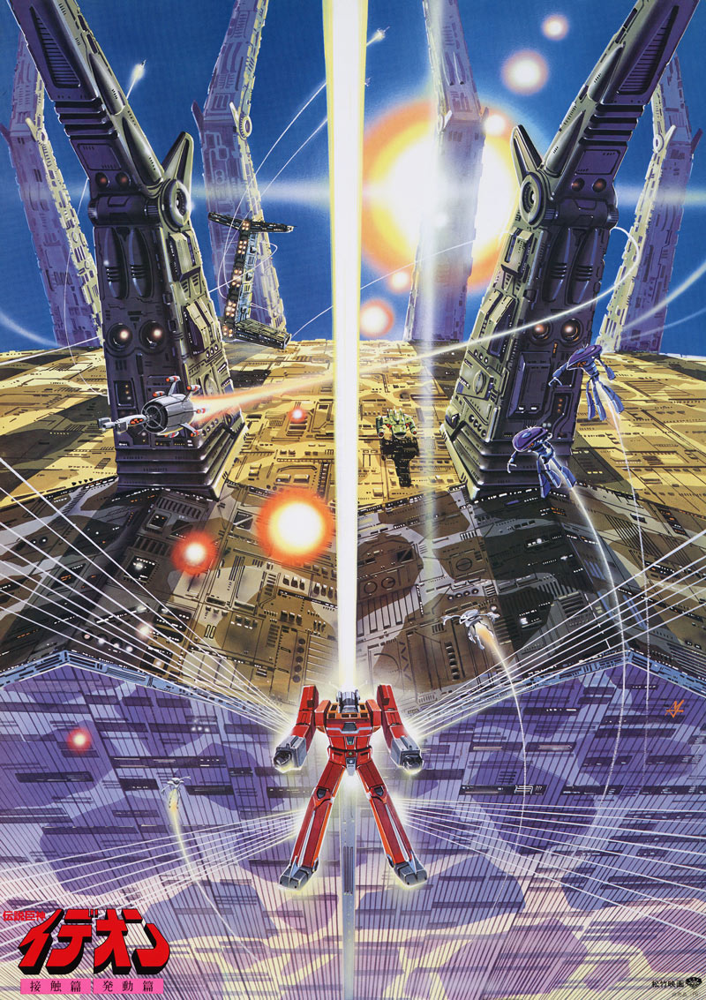
PRODUCTION INFORMATION
Yoshiyuki Tomino has finally earned the chance to revive SPACE RUNAWAY IDEON with the success of the dominant theatrical performance of MOBILE SUIT GUNDAM. Prior to the series' cancellation, the final five episodes were already written in advance as well as storyboarded by Tomino himself. Everything was needed to make this finale as good as it could possibly be. However... the only restriction that Tomino faced was that it NEEDED to be a double feature showing, with the first film being a cut down version of the TV Series. Considering this was the only hurdle they needed to clear, and knowing that there was no other way to have this second chance, they cut down the 39 episode series into a film.
BE INVOKED showcases some of the series' best visuals, animation, and direction. Character Designer and Chief Animation Director Tomonori Kogawa's work especially shows. The final scene of the film was entirely animated by him, which showcases some of the more delicate, fluid, and masterful animation in all of the series.
Release Date: October 7, 1982
Chief Director: Yoshiyuki Tomino
Director: Toshifumi Takizawa
Studio: Sunrise
STORY
For years, the Solo Ship and the Buff Clan have been at war. With the IDEON at their disposal, the Solo Ship seems to have control over the tide of the war, but unbeknownst to them, the Buff Clan is working on their latest weapon: the GANDA ROWA, a powerful warship that might be even more powerful than the IDEON itself. On the Solo Ship's side, the daughter of the leader of the Buff Clan, Karala, discovers that she is pregnant. She believes that this child could mark the end of the never ending conflict... however, the IDEON has begun to lost their trust in the Solo Ship after all these years. All the stops have been pulled, and the war is now tragically reaching its end point.
Doom, death, and destruction are now manifested.
The IDEON has finally invoked its true dormant power.
CAST AND CREDITS
Chief Director: Yoshiyuki Tomino
Mechanical Design: Yuichi Higuchi
Character Design: Tomonori Kogawa
Soundtrack: Koichi Sugiyama
Storyboard: Yoshiyuki Tomino
Script/Screenplay: Kenichi Matsuzaki, Sukehiro Tomita, Yuji Watanabe, Hiroyasu Yamamura
Art Direction: Mitsuki Nakamura
Chief Animation Direction: Tomonori Kogawa
IMAGE GALLERY
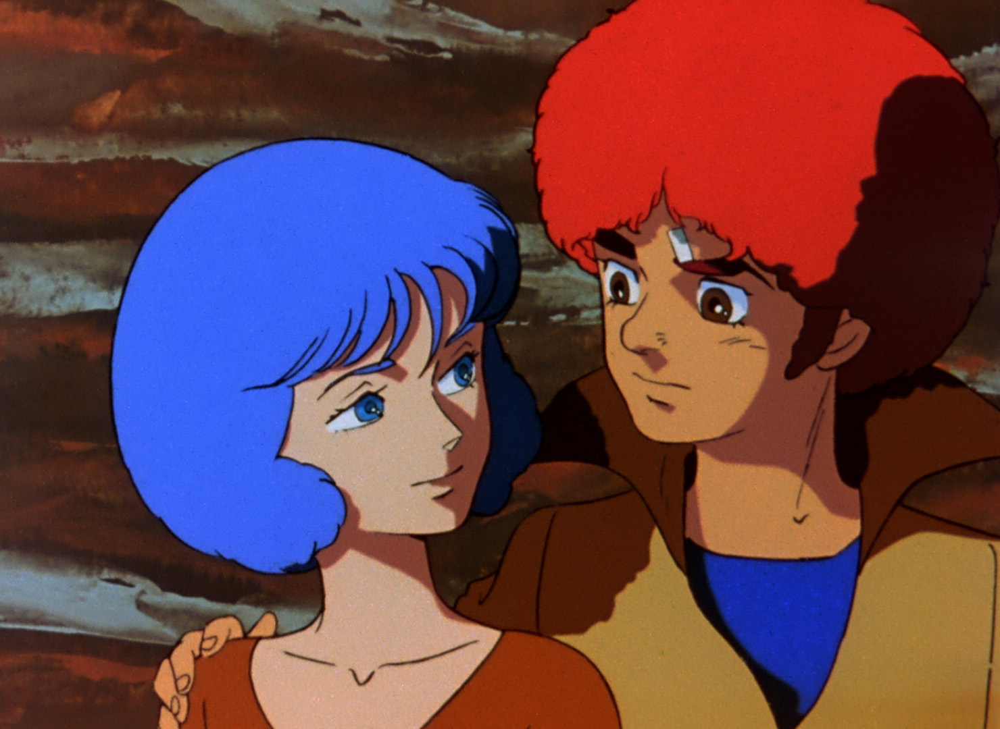
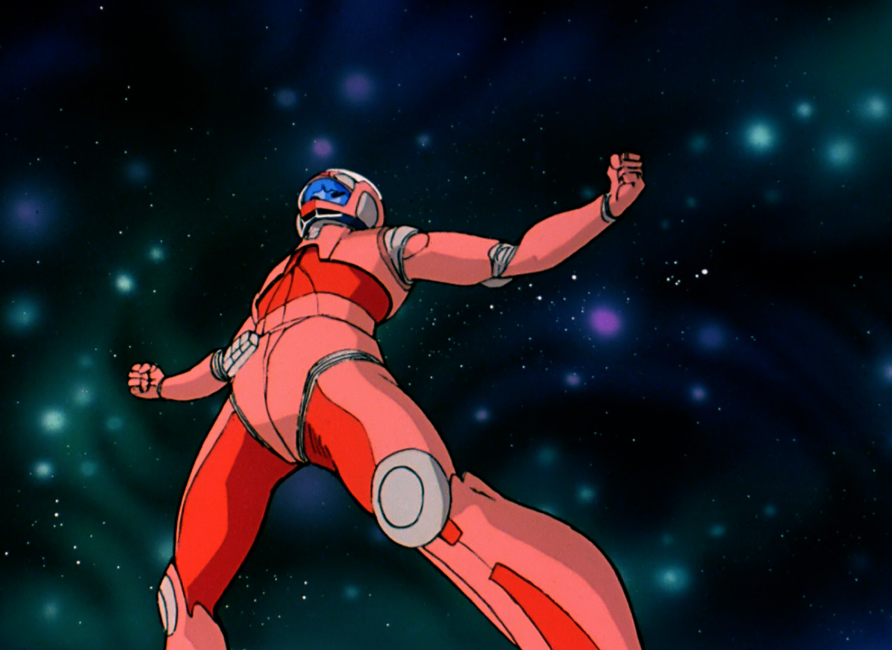
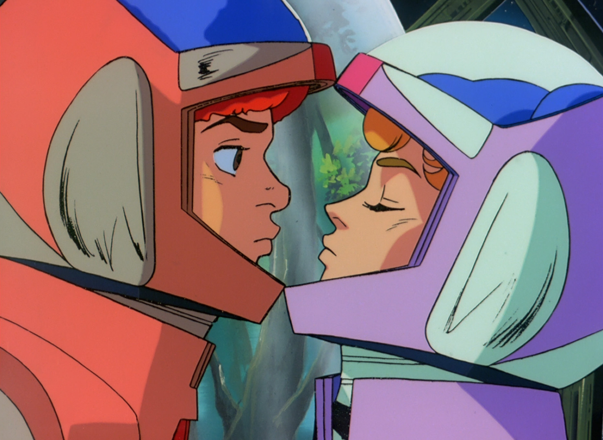
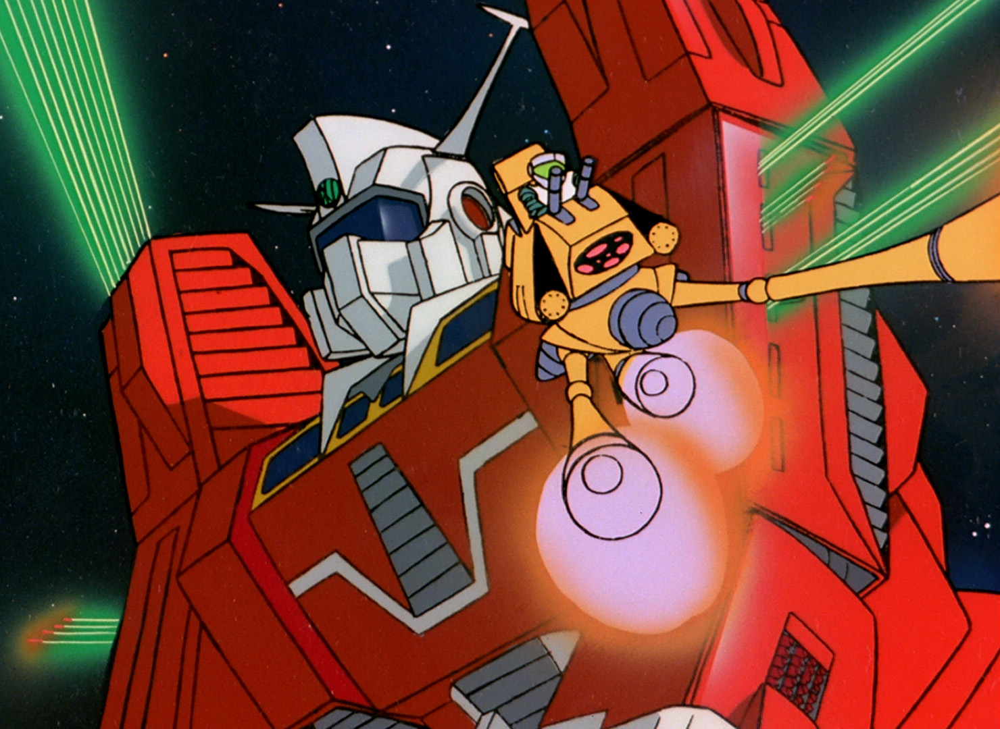
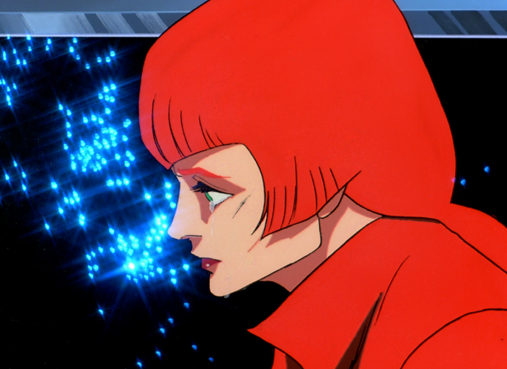
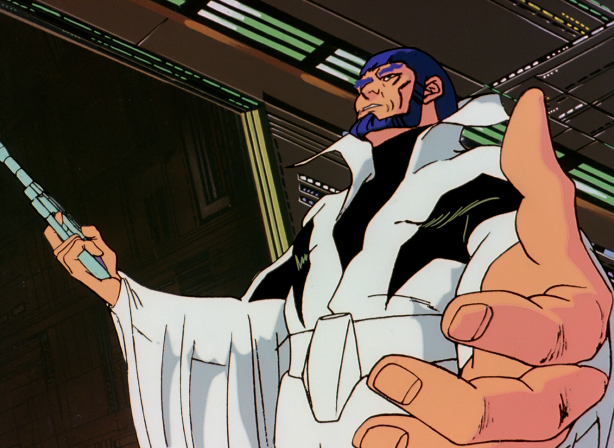
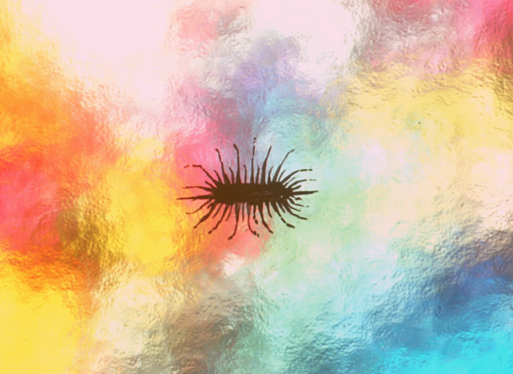
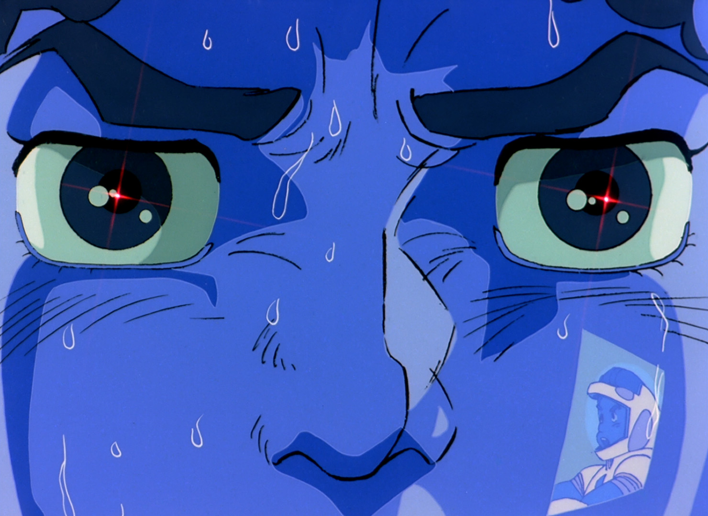
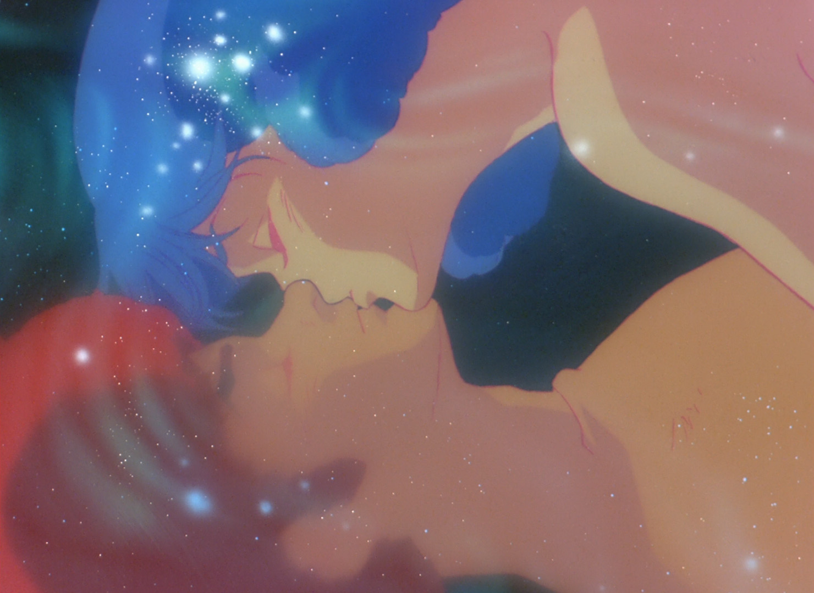
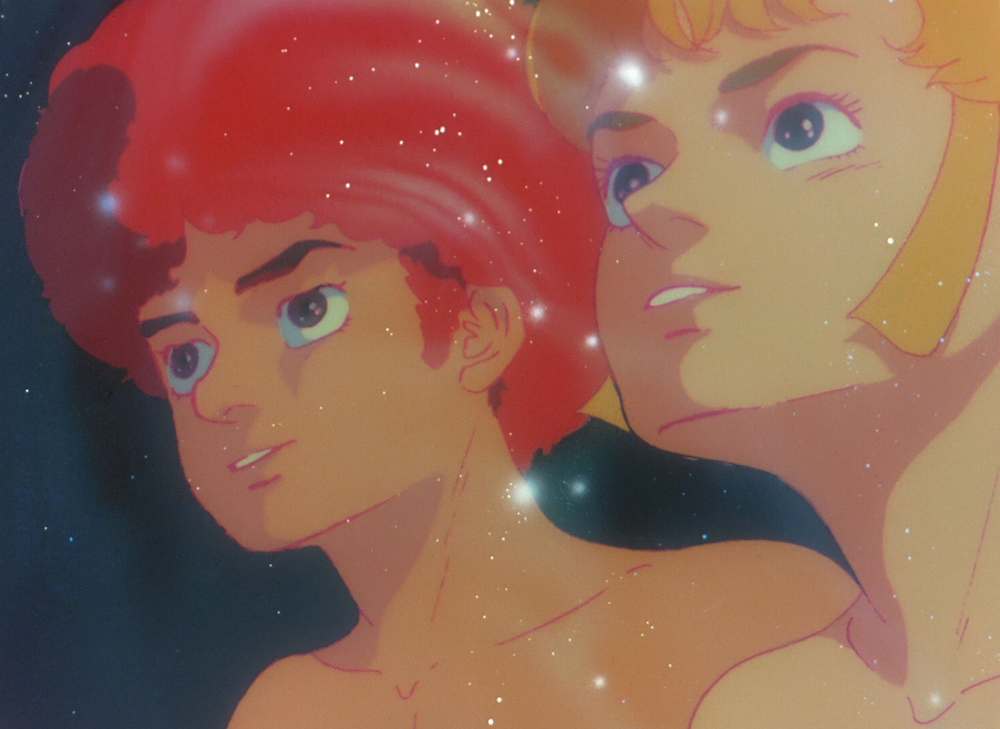